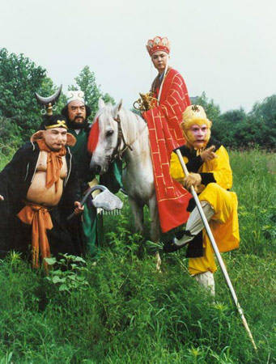

《西游记》里那些小妖们
http://hiphotos.baidu.com/%D6%AA%D2%F4%CE%C4%D1%A7%C9%E7/pic/item/e6c54a17ce02f2184a90a7b7.jpg
http://hiphotos.baidu.com/%D6%AA%D2%F4%CE%C4%D1%A7%C9%E7/pic/item/010d609b949810acc9eaf492.jpg
一、混世终须还
作为我国古典四大名著之一，《西游记》可谓家喻户 晓,这部神怪小说不但构思严谨，而且寓意深刻,作者吴承恩是通过神怪世界,来揭露当时社会制度的弊端,所以在《西游记》这部书里，神怪即代表着现实人物， 每个神怪都有它的独特寓意，比方玉帝就与地上的昏君并无任何差别，玉帝昏到何等程度呢?从他对孙悟空的任用上就可以看出来. ../../../fc/editor/images/spacer.gif
孙悟空被二度招安后,再上天庭,玉帝封孙悟空为齐天大圣,并掌管蟠桃园,这个任命充分说明了他的昏庸,猴子见了桃,岂有不偷吃之理?用孙悟空去掌管蟠 桃园,就如同用小偷去管钱一样，可以说, 孙悟空大闹天宫是玉帝自己惹的祸, 玉帝已经昏到不知猴子爱吃桃的地步,天宫岂能不乱?
玉帝的昏还表现在请如来镇压孙悟空的起义,其实天宫中能降伏孙悟空的神仙不止一尊,太上老君,元始天尊都可以轻易做到,可玉帝似乎压根不知道身边有这样的高人,却偏去外国请如来.
关于天宫及宫里的神仙,网上已有人写过,我不再多谈,我要谈的是书里的妖怪，在唐僧师徒取经的路上，遇到的妖精为数不少，如果没有这些妖怪, 《西游记》这部书就会显得不完整,读起来要少很多趣味, 《西游记》之所以能名列四大名著, 与这些妖怪不无关系,因此,有必要一谈.
我所谈的妖,将依照出场次序来谈,是指与唐僧师徒作对的妖, 孙悟空,猪八戒，沙僧,白龙马虽都曾为妖,但不算在内.书里真正有妖魔出现是在第二回，这个叫做混世魔王的家伙，趁着孙悟空学艺未归，试图抢占花果山水帘 洞为己有,孙悟空自灵台方寸山归来,就此引发了一场地盘争夺战.
混世魔王的法力并不高,用的武器是一把刀,拳脚功夫也很差, 吴承恩似乎只是把它作为孙悟空初展身手的陪衬，下引原文：
"悟空急睁睛观看，只见那魔王-- 头戴乌金盔，映日光明;身挂皂罗袍，迎风飘荡。下穿着黑铁甲，紧勒皮条;足踏着花褶靴，雄如上将。腰广十围，身高三丈。手执一口刀，锋刃多明亮。称为混世魔，磊落凶模样。”
较量的结果,是孙悟空嚼碎毫毛,变出数百小猴, “你看他前踊后跃，钻上去把个魔王围绕，抱的抱，扯的扯，钻裆的钻裆，扳脚的扳脚，踢打挦毛，抠眼睛，捻鼻子，抬鼓弄，直打做一个攒盘。这悟空才去夺得他 的刀来，分开小猴，照顶门一下，砍为两段，领众杀进洞中，将那大小妖精，尽皆剿灭。”
然而，吴承恩始终也没说明到底是混世魔王是何妖物，这也就是暗示它是个可有可无的东西，何为混世?俗话说就是白给，在全书的妖怪中，它只能算最末流，比小妖强不了多少.
二、独角鬼王之谜
 http://hiphotos.baidu.com/%D6%AA%D2%F4%CE%C4%D1%A7%C9%E7/pic/item/4960712d40e9632d359bf772.jpg
孙悟空初登天庭,官封弼马温,一怒之下返回花果山,正与群猴叙旧，独角鬼王忽来拜访，并献上赭黄袍,这一情节往往被人忽略,有的版本还将这一段删去了，事实证明,独角鬼王献赭黄袍大有深意，它的神秘出现,反映了当时各种势力的复杂关系,下引原文:
鬼王道：“久闻大王招贤，无由得见，今见大王授了天箓，得意荣归，特献赭黄袍一件，与大王称庆。肯不弃鄙贱，收纳小人，亦得效犬马之劳。”猴王大喜， 将赭黄袍穿起，众等欣然排班朝拜，即将鬼王封为前部总督先锋。鬼王谢恩毕，复启道：“大王在天许久，所授何职?”猴王道：“玉帝轻贤，封我做个什么弼马 温!”鬼王听言，又奏道：“大王有此神通，如何与他养马?就做个齐天大圣，有何不可?”
很明显,独角鬼王试图将事态扩大化,也就是人们说的“煽阴风，点鬼火”，孙悟空只是嫌官小而已,并无其他想法,即便被捉回去，想来也不会处罚太重，可 一旦自封齐天大圣，那就有另立朝廷的意味了，性质由违规一变而为武力对抗中央，孙悟空要是获胜，独角鬼王可算是头号功臣，孙悟空要是失败，独角鬼王大不了 溜之大吉，孙悟空会受到怎样的处罚，都不关它的事.
从独角鬼王与孙悟空的对话中可以得知，它应该是听到消息特意赶来，献袍是早有预谋，除了想挑起矛盾激化，还可能有更为险恶的用心. 自从孙悟空自从入龙宫闹地府，名震妖界，得罪的对头很多，正所谓树大招风，以孙悟空得道后的能为，想置美猴王于死地并不容易，既然阎罗王都拿孙悟空没办 法，那只有天庭可以了，也就是说，独角鬼王有借刀杀猴的嫌疑.
果真如此的话，谁是背后指使者呢?这要从独角鬼王是何等妖物说起.在动物当中长角的不少，但长一只角的动物现实中没有，只有传说中的魑魅魍魉具有这个 特征，魑魅魍魉据说是木石之怪，多数高大、红身、尖耳、头长角，很难说与龙王有没有瓜葛，当然，这只是猜测，吴承恩并没有道出独角鬼王究竟有何背景，是何 物所变，按照常理分析，说“它”想趁乱捞取利益更加合理一些.
现实生活当中，唯恐天下不乱，“煽阴风，点鬼火”的人可不少啊!
三、幸运的熊怪
http://hiphotos.baidu.com/%D6%AA%D2%F4%CE%C4%D1%A7%C9%E7/pic/item/e722c9162c59e448f3de3292.jpg
经过了孙悟空大闹天宫，被压在五行山下这许多波折以后，美猴王再与妖精打交道，已经是在西天取经的道路上，说起来，都是唐僧的袈裟惹的祸.
唐僧从长安出发之前，观世音赠给他一件袈裟，上面嵌满了奇珍异宝，这袈裟当然不是凡品，平常唐僧都不往外拿，在路过观音院的时侯，有个二百七十岁的金 池长老自吹所藏袈裟甲天下，孙悟空听了气不过，就把师傅的宝贝那出来叫他开开眼界，谁知老和尚试图谋害唐僧师徒，据宝贝为己有，于是半夜放了一把火，结果 没烧到唐僧师徒，反而把观音院烧毁了，正是这把无名火，才把熊怪引了出来.
原来这老和尚常与熊怪讲道，关系处得不错，熊怪见寺院着火，出于对老朋友的关心，急忙赶来救火，无意中发现了宝贝袈裟，便趁哄打劫，拿了袈裟就走，再 也顾不得老朋友死活. 金池长老找不到袈裟，又毁了寺院，羞愧难当，便撞墙自杀了，书中为此还写有两首诗，其中第二首写得非常好：但将容易为长久，定是萧条取败功。广智广谋成甚 用?损人利己一场空。
熊怪偷袈裟的目地说来很出人意料，竟是为了给它祝寿，下引原文：
" 那行者正观山景，忽听得芳草坡前有人言语。他却轻步潜踪，闪在那石崖之下，偷睛观看。原来是三个妖魔，席地而坐。上首的是一条黑汉，左首下是一个道人，右 首下是一个白衣秀士，都在那里高谈阔论。讲的是立鼎安炉，抟砂炼汞，白雪黄芽，旁门外道。正说中间，那黑汉笑道："后日是我母难之日，二公可光顾光顾?" 白衣秀士道：年年与大王上寿，今年岂有不来之理?"黑汉道："我夜来得了一件宝贝，名唤锦襕佛衣，诚然是件玩好之物。我明日就以他为寿，大开筵宴，邀请各 山道官，庆贺佛衣，就称为佛衣会如何?"
把过生日称为"母难之日"，可见这熊怪道行不浅，不光外表黑，肚里也积攒了几斤墨水.孙悟空打上前去，熊怪化风而逃，只打死了白衣秀士，一条白花蛇 怪.孙悟空追到熊怪藏身的黑风洞，熊怪持黑缨枪与孙悟空斗了半日，居然不分胜负，斗到后来，以进膳为借口避门不出.
孙悟空回到观音院不久，一件非常有意思的事出现了，熊怪给已死的金池长老送来了一封用词很典雅的信，现摘录如下：
侍生熊罴顿首拜，启上大阐金池老上人丹房：屡承佳惠，感激渊深。夜观回禄之难，有失救护，谅仙机必无他害。生偶得佛衣一件，欲作雅会，谨具花酌，奉扳清赏。至期，千乞仙驾过临一叙。是荷。先二日具。
这封信显然有违常礼，明明是熊怪从金池长老那里把袈裟夺来的，它反而去请被夺者赴宴，再者，金池长老如果没死，它见了金池长老该做何解释?这个问题在 孙悟空变作金池长老的模样再探黑风洞时有了答案，熊怪说：“：“老友差矣。这袈裟本是唐僧的，他在你处住札，你岂不曾看见，反来就我看看?”言外之意是， 谁先抢了归谁，另外，某些人在害了别人之后，会表面上对被害者更加客气，不想熊怪也会这一套，看来它果真修成人道了.
孙悟空的变化被它识破，又斗了一天，还是不能获胜，不得已一个筋斗翻到南海，请来了观世音.回到黑风山，迎面遇到了前来参加佛衣会的苍狼精，也就是在 芳草坡所见的道人，孙悟空将它一棒打死，自己变做仙丹，观世音则变作苍狼精，带着“仙丹”到了黑风洞中，熊怪不知底细，吞下“仙丹”，后果可想而知，熊怪 就这样被收伏了.孙悟空原想除去熊怪，观世音却说落伽山后无人看管，要带熊怪去做个守山大神。
于是，偷袈裟的熊怪一步登天，意外得到了正果，成了同类中最幸运的一个.
四、佛前黄鼠
http://hiphotos.baidu.com/%D6%AA%D2%F4%CE%C4%D1%A7%C9%E7/pic/item/86fa2d3136f1f800ebc4af93.jpg
在“西游记”里，很多妖怪都有背景，在与它们的较量中，孙悟空往往占不到便宜，迫不得已向各路神仙求救，而只要某神仙出面，妖怪即使最后被制住，也会免于惩罚，不了了之，黄毛貂鼠便开了这样一个先例.
事情发生在高老庄八戒皈依之后，唐僧师徒三人又走了一年多光景，来到黄风岭，与这貂鼠相遇了. 先是它手下的虎先锋把唐僧掳进洞里，猛虎甘心给一只小小的貂鼠当先锋，足以说明这只貂鼠不同凡响，没有超强法力，决镇不住山中之王，悟空与八戒找上门来， 貂鼠果真展现出了独特神通，下引原文：
“那怪害怕，也使一般本事：急回头，望着巽地上把口张了三张，呼的一口气，吹将出去，忽然间，一阵黄风，从空刮起。”“就把孙大圣毫毛变的小行者刮得 在那半空中，却似纺车儿一般乱转，莫想轮得棒，如何拢得身?慌得行者将毫毛一抖，收上身来，独自个举着铁棒，上前来打，又被那怪劈脸喷了一口黄风，把两只 火眼金睛，刮得紧紧闭合，莫能睁开，因此难使铁棒，遂败下阵来。”
巽在八卦中代表风位，可以断言，貂鼠使的应是一种祭风之术，只是这貂鼠祭起的风确实十分邪门，风呈黄色，威力超过了十二级台风，刮起来天昏地暗，书上说是叫三昧神风，不过，应该叫做妖风更合适.
孙悟空对这股妖风无可奈何，到小须弥山去请灵吉菩萨，灵吉拿了飞龙杖，降服了貂鼠，孙悟空正要除掉妖魔，却被灵吉拦住，说：“他本是灵山脚下的得道老 鼠，因为偷了琉璃盏内的清油，灯火昏暗，恐怕金刚拿他，故此走了，却在此处成精作怪。如来照见了他，不该死罪，故着我辖押，但他伤生造孽，拿上灵山。今又 冲撞大圣，陷害唐僧，我拿他去见如来，明正其罪，才算这场功绩哩。”
这话说已说得很明白，貂鼠是灵山出产，必须交给如来处理，孙悟空只好让灵吉把貂鼠带走，不难想像，貂鼠到了灵山，如来肯定又会将它放生，佛语有言，“扫地不伤蝼蚁命，爱惜飞蛾杀罩灯”，何况是仅刮了几阵妖风的黄鼠呢?
在中国古代，一向有社鼠难除的说法，黄毛貂鼠的状况与其类似，但略有不同，社鼠与社里的神没有关系，真要有性命之忧，不会有神灵来救，黄毛貂鼠却和如 来有说不清的关系，灵吉所说的得道，实际上就是指黄毛貂鼠受过如来的点化，这样一来，灵吉宽释黄鼠，更象是官官相护，变得微妙起来.
灵山脚下的一只黄鼠，已经造成如此大的麻烦，可以预见，唐僧师徒的前方决不会是一路坦途.
五、精生白骨堆
http://hiphotos.baidu.com/%D6%AA%D2%F4%CE%C4%D1%A7%C9%E7/pic/item/ba2ae47e63242e210cd7da93.jpg
三打白骨精的故事在民间流传甚广，也被改编得最多，无论是电视剧还是动画片，都加进了许多原著没有的情节，在地方戏曲中这也是一出保留剧目，人们似乎对这一回分外感兴趣，这其中当然有其必然原因，不会无缘无故如此.
而实际在全书中，这一回确是有着特殊意义，首先，这是唐僧师徒五人聚首以来，首次一同面对妖魔，值得纪念，其次，比这还更为重要的是，这次战役造成了 唐僧师徒的分裂，使取经计划几乎刚开始就夭折，尽管以后遇到的很多妖魔法力要比白骨精利害，但论起对取经计划造成的威胁，都没有这次严重.
唐僧被抓与否其实并不重要，只要孙悟空还肯保护唐僧，终究是会有救，一旦孙悟空弃唐僧而去，唐僧便任人宰割，只有念咒的份了——可惜紧箍咒对妖精不起 作用，所以欲吃唐僧肉，必除孙悟空，除不掉怎么办?就采取离间的办法，可以说，白骨精是唐僧师徒所遇到的妖魔中最阴险的一个，它的三次变化，已充分证明了 这一点.
白骨精第一次是变作年轻村姑，第二次是变作老妇，最后一次是变做老头儿，以造成全家被害的假象，使孙悟空背上“灭门”大罪，变作年轻村姑时或许是无 意，接下来两次变化绝对是故意设下的阴谋，而这阴谋也几乎得逞，唐僧把紧箍咒念了一遍又一遍，虽然在此之前白骨精已魂消身灭，但还是使唐僧写下修徒文书， 把孙悟空赶回了花果山，而在此以后，没有哪个妖魔想到离间唐僧师徒，那么，为何白骨精为何具有如此深的心机，而其它妖魔不具备呢?
因为白骨精是人死后所变，也就是鬼魂作祟，孙悟空在打杀它的时侯，它两次用元神出窍的方法逃脱，这是鬼魂才有的特征，即然它曾为人，它借白骨成精以 后，当然也就具有了人的某些特性，而其他妖魔不是兽类就是仙童，尽管也不乏狡诈之辈，但论起心机，还是和人有很大差距.
毛泽东曾经写过一首与此有关的七律，抄录如下：
一从大地起风雷，便有精生白骨堆。
僧是愚氓犹可训，妖为鬼蜮必成灾。
金猴奋起千钧棒，玉宇澄清万里埃。
今日欢呼孙大圣，只缘妖雾又重来。
世上的妖，是打不尽，杀不完的.
六、兜率双童
http://hiphotos.baidu.com/%D6%AA%D2%F4%CE%C4%D1%A7%C9%E7/pic/item/b8b6f4ec7a5f1a242697919c.jpg
孙悟空的神通可称广大，最拿得出手的应是七十二变，金箍棒这件上古神兵除了重有万斤，能在正面撕杀中取得优势外，没有别的奇异之处，所以遇到携有法宝的妖怪时，老孙只有靠机智与变化取胜，形势上却往往居于劣势，莲花洞的情况就是如此.
金.银两角大王携带的法宝多达五件，这在全书中是最高记录，在与孙悟空对敌的时候，只用了四件，幌金绳，葫芦，芭蕉扇与七星剑，其中威胁最大的是葫芦，这葫芦据银角大王说大有来历，下引原文：
"我这葫芦是混沌初分，天开地辟，有一位太上老祖，解化女娲之名，炼石补天，普救阎浮世界。补到乾宫触地，见一座昆仑山脚下，有一缕仙藤，上结着这个 紫金红葫芦，却便是老君留下到如今者。"从此可以推断，这两个长角的家伙也不是凡人，而且与太上老君似乎关系密切，连老君的私事都知道.
银角大王曾显示过移山绝技，移来须弥，峨眉，又加上泰山，几乎把孙悟空压死，这更说明了他的不凡，因为这三座山并不是普通的山，须弥，峨眉是佛教名 山，泰山是五岳之首，泰山神的地位也非寻常山神可比，但竟不得不听银角大王的号令，可见，在他的背后，有一股强大的势力.
孙悟空仗着变化神奇，把银角大王的葫芦赚了过来，这葫芦有个奇特之处--敌我不分，一概照装不误，金.银两角大王便都被装了进去，眼见就要闷死在葫芦里，强大的势力出现了，太上老君忽然现身，不但要回葫芦，还说明了真相，下引原文：
"葫芦是我盛丹的，净瓶是我盛水的，宝剑是我炼魔的，扇子是我扇火的，绳子是我一根勒袍的带。那两个怪，一个是我看金炉的童子，一个是我看银炉的童 子。只因他偷了我的宝贝，走下界来，正无觅处，却是你今拿住，得了功绩。"大圣道："你这老官儿，着实无礼，纵放家属为邪，该问个钤束不严的罪名。"老君 道："不干我事，不可错怪了人。此乃海上菩萨问我借了三次，送他在此托化妖魔，看你师徒可有真心往西去也。"
老君的话里大有玄机，金童在银童被捉时，曾道："贤弟呀!我和你私离上界，转托尘凡，指望同享荣华，永为山洞之主。怎知为这和尚伤了你的性命，断吾手 足之情!"似乎应是两人自己所为，老君却说"此乃海上菩萨问我借了三次"，难道说，是观世音劝老君纵徒下界，老君不肯，金银二童才偷了宝贝走下界来?
金银二童在天上是没有前途的，只能烧一辈子火，到下界来却可移山，可惜还是回到了天上无从施展，也许，这就是命运的安排.
七、阉割之狮
http://hiphotos.baidu.com/%D6%AA%D2%F4%CE%C4%D1%A7%C9%E7/pic/item/0c26c1ca2a6bec9fc9176892.jpg
在权力的笼罩下，总会随之而生一些奇特的现象，比如从有皇权那一刻起，就伴随着太监，这两个特殊群体之间有着密不可分的联系，太监是权力滥施的产物，具体出现时间已不可考，出现的原因却很简单.
谁都知道，无论皇帝还是王侯，莫不是妃子成群，这些妃子如果只有宫女服伺，宫里一旦需要搬个东西，抬个鸾驾之类，宫女恐难以胜任，所以，宫里仍需要男 仆役，但因而就带来一个问题，这些妃子当然非常美貌，皇帝一个人又照顾不过来，万一有妃子奈不住寂寞，与男仆役发生不轨之事，宫里岂不是要乱了套?而从实 际情况分析，这种事发生的概率几乎是百分之百，那么，只有采取一个办法才能彻底解决这个问题，这就是阉割之法，让男人生理上做不成男人，体格上又不失其个 性，于是，世上多了一种人叫做太监，专在宫中服务，不能娶妻，不能生子，成为皇权的牺牲品.
这当然违背人性，但皇权是至高无上的，据说皇帝都是天帝之子，下到凡间来是奉天帝之命， 皇帝即然要阉割他的臣民，当然也就是天帝的意思，地上的臣民怎能反抗天帝?从某种意义上来说，皇权一定程度上已被神化，而能够与之比肩的，大概只有神权.
与皇权在俗世中一样，如来在佛教中的地位也至高无上，他管理的范围甚至超过皇权，一旦有人不敬，必会受到惩戒，乌鸡国王便是一例.这国王只因为没长一 双慧眼，看不出文殊菩萨的金身，把文殊浸在水里三天三夜，如来就令文殊的座骑青毛狮为妖，把有眼无珠的国王推到井里浸了三年，这与佛家的善恶有报倒也相 应，但为了王妃不受到玷污，青毛狮却在接受任务之前被阉了，或者说，是被净了身，这很令人震惊，佛家不是讲慈悲?
如来的做法，竟与皇帝不谋而合，这说明皇权与神权有着相似之处，人权力高到了极致，所说的话就成了旨，被阉割者，也只有落得个太监命运.
八、红孩儿的秘密
http://hiphotos.baidu.com/%D6%AA%D2%F4%CE%C4%D1%A7%C9%E7/pic/item/902b9cfccf6a88e4fc037f92.jpg
火云洞这一战役是比较难打的一仗，红孩儿虽然是个娃 娃，却有着复杂的背景.红孩儿的爹妈都很有来头，他爹牛魔王是孙悟空的结义大哥，他妈铁扇公主是佛教界有名的罗刹女，红孩儿耳熏目染，道行自然不低，而他 还独具异禀，肚里充满了火气，擅于喷火，每出行，必驾一朵红云，气派着是不小.
尽管红孩儿不是俗类，但行事还是带着孩儿气，使人对红孩儿即感到厌恶的同时，又会觉得他有几分可爱，在红孩儿的身上，分明是有着顽童所特有的烙印，关于这一点，吴承恩刻画得极为成功，塑造了一个未成年犯罪的典型.
红孩儿设计捉唐僧的时侯，变作一个赤条条的七岁小孩，把自己吊在树上呼救，实在不算高明，在荒山野岭不见人烟的地方，哪里来的小孩子?又说爹被强盗所 害，妈被抢去做了压寨夫人，请救他一命回家云云，即然爹妈都已被害，当然就没有家回了，撒谎时说漏了嘴，正是顽童常有的事，红孩儿在当地的恶行，经过山神 诉说出来，更加带有恶作剧的性质.
他向山神土地征收常例钱，不给的话,就把山神土地拿到洞里替他打更,山神土地还必须上供物品,否则就要拆庙宇，剥衣裳，以至弄得众山神一个个"披一 片，挂一片，裩无裆，裤无口",成了“一伙穷神”，这种行为虽蛮横无理,可仍透出几分童贞,但红孩儿毕竟不是凡间顽童,而是一个顽劣的妖童，在他身上,当 然还有极其可怕的一面。
红孩儿在与人对敌的时侯，鼻可生烟，口可吐火，他吐的火并不是一般的火，而是三昧真火，孙悟空请龙王用水来灭火，结果火非但没灭成，孙悟空反而受了红孩儿的暗算，水火攻心，竟几乎身亡,可红孩儿是从哪里得来的三昧真火呢?
山神说红孩儿是在火焰山修行三百年,练成了这种特异功能,但红孩儿的爹妈牛魔王与铁扇公主都不会吐火, 红孩儿也决不可能自己修练到这般地步,他的兵器又是一杆火尖枪, 牛魔王与铁扇公主的兵器都不是枪, 既然如此,红孩儿必定另有名师指点,而天宫里的哪吒三太子使的也是火尖枪,两者很可能有关联, 哪吒师从道家,以此推断, 红孩儿的师父也应是道家高人.
尤其令人怀疑的是, 红孩儿竟然知道孙悟空怕烟,而最了解孙悟空这个弱点的莫过于太上老君,当年正是八卦炉中的浓烟把孙悟空熏成了火眼金睛,火焰山又是孙悟空推倒八卦炉时,跌 落到凡间的炉砖所化,吴承恩这样写分明是有所暗示, 因此, 红孩儿的授业师父很可能是太上老君!
明确了红孩儿的师承,一切疑点都迎刃而解了,这也就是观世音来收降红孩儿的时侯，红孩儿非但不服,还敢与动武的原因, 观世音收起尖刀莲座, 红孩儿马上降而复反,说:“小小法术,怎能降我?” 这只能说明他见过比观世音地位更高,法力更大的神, 而且红孩儿既对观世音如此不敬,也可以说明,他授业师父不是佛家中人.
红孩儿被观世音收服, 最终能够位列正神,做到善财童子,与龙女并列,恐怕也是看在太上老君的面子, 老君在教红孩儿火攻之术时,或许看出他顽劣难驯,所以与观世音商量好,让他在适当的时候改投佛家, 老君与观世音关系不错,换个徒弟教也不足为奇.
九、黑水鼍龙
http://hiphotos.baidu.com/%D6%AA%D2%F4%CE%C4%D1%A7%C9%E7/pic/item/fc5bd1352f73ac0891ef3965.jpg
在西游记第九回，魏征斩过泾河龙王，当时就引发了一场风波，令唐太宗到地府游了一遭，可事情并没有完，泾河龙王的亲戚儿女都是龙种，哪条都会兴云布雨，到了第四十三回，泾河龙王的的儿子果然寻机报复，给唐太宗派往西天取经的御弟制造了不小的麻烦.
泾河龙王与西海龙王敖顺有姻亲关系,是敖顺的妹夫，在同族当中，也算是有比较有势力的了，因为龙王也有等级之分，四海龙王最大，江河龙王次之，不是每 个河龙王都能做四海龙王的妹夫.敖顺的妹妹在泾河龙王被斩以后，郁郁寡欢，多年以后终于病故，留下了九个儿子.
这九条龙也不是等闲之辈，不是镇守江河,就是给如来,玉帝当职,只有最小的鼍龙没有差事,却也占据了黑水河.那河里原先有河神,鼍龙是通过武力手段强行占据的,河神去敖顺那里告状,这状当然告不赢,河神自诉如下：
“那妖精旧年五月间，从西洋海趁大潮来于此处，就与小神交斗。奈我年迈身衰，敌他不过，把我坐的那衡阳峪黑水河神府，就占夺去住了，又伤了我许多水 族。我却没奈何，径往海内告他。原来西海龙王是他的母舅，不准我的状子，教我让与他住。我欲启奏上天，奈何神微职小，不能得见玉帝。今闻得大圣到此，特来 参拜投生，万望大圣与我出力报冤!”
龙王在它管辖范围内可以为所欲为，纵容家属行凶，说明地方官员的权力并没有得到有效监控，从河神的自诉里，深刻的反映了天庭制度的黑暗.而天下江河湖 海都归龙王管，这里面发生过多少滥用职权，以权谋私的事，就可想而知了，其中的黑幕，恐怕要比黑水河的水还要黑!黑水河到底有多黑?下引原文：
层层浓浪，迭迭浑波，层层浓浪翻乌潦，迭迭浑波卷黑油。近观不照人身影，远望难寻树木形。滚滚一地墨，滔滔千里灰。水沫浮来如积炭，浪花飘起似翻煤。 牛羊不饮，鸦鹊难飞。牛羊不饮嫌深黑，鸦鹊难飞怕渺弥。只是岸上芦灊知节令，滩头花草斗青奇。湖泊江河天下有，溪源泽洞世间多。人生皆有相逢处，谁见西方 黑水河!
鼍龙将唐僧擒到水下，一心想害唐僧的性命，这样，既可以报得父仇，又能长生不老，顺便又孝敬了母舅，谁知孙悟空找到敖顺，这母舅怕牵连自己，也就顾不 上甥舅之情，派了鼍龙的表哥摩昂来捉拿它，上演了一场姑表大战.鼍龙被捉以后，孙悟空看在西海龙王也是老朋友了，也就做个顺水人情，让摩昂将鼍龙带回处 置，不难想见，到了西海龙王那里，鼍龙就龙归大海，重获自由了，连孙悟空也不得不向黑暗制度妥协，着实可叹!
[文/奇酷编辑/林风]